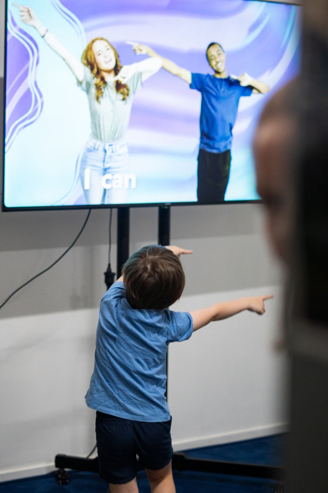
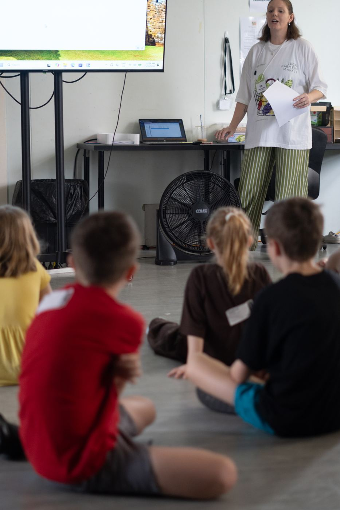

Encounter
Encountering the love of Jesus in our everyday lives.
Ministries · Kids
Freedom Kids is so much more than games and Bible stories. Our heart is that every child would discover how much Jesus loves them and that He is alive, present and wants a real relationship with them.

Our goal isn't simply for children to know the stories of the Bible, but to know the Author of those stories.
Encountering the love of Jesus in our everyday lives.
Growing in faith, character and purpose.
Impacting and making a difference in our worlds.
Making friends that encourage us and grow with us.
Every lesson, worship moment, conversation and activity is designed to help kids know Jesus, understand His Word and live out their faith with confidence.

Kids are welcomed by name, settle in and connect with their leaders and friends through games and hanging out.

We sing, dance and worship Jesus together. Kids learn that worship isn't just songs, it's a response to who God is.

Kids explore the Bible in small groups by age, where they can ask questions, talk about faith and make real friends.
Our littlest Freedom Kids explore who Jesus is through Bible stories, songs, play and hands-on activities made just for their age, with loving leaders who know them by name.
Still in nappies or toilet training? No problem. We'll text you to come and help when it's needed, and there's a parents room with a change table.
Pioneers dig into God's Word together through engaging teaching, praise and worship, and small groups where kids ask questions, make friends and grow in their faith.
Finishing Grade 6? We celebrate our graduates as they step up into Youth, with a special moment in the Sunday service.


We take the trust you place in us seriously. Every child deserves to feel seen, known, valued and loved, and to be safe.
Register your kids before you arrive and check-in will be quick and easy. We can't wait to meet them!